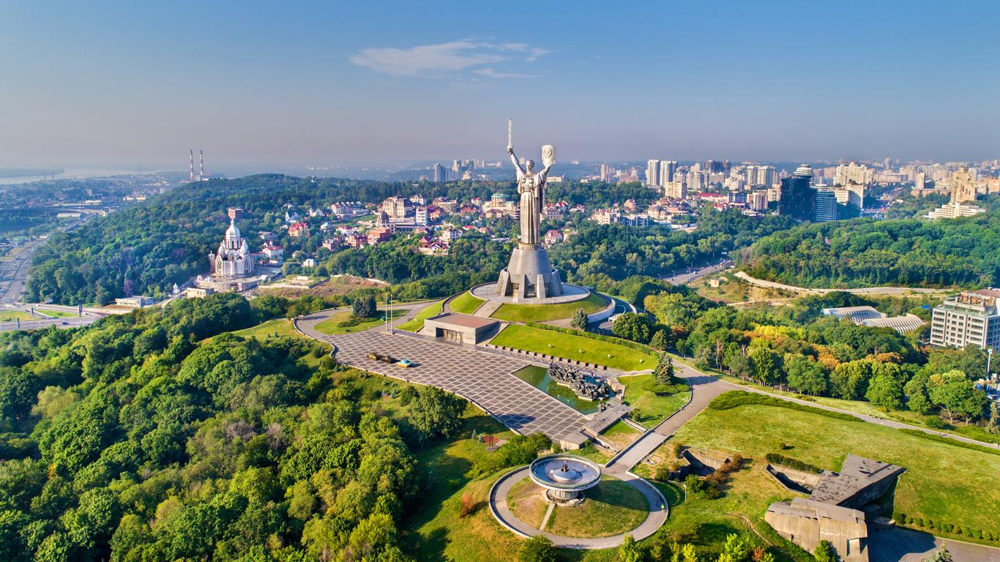
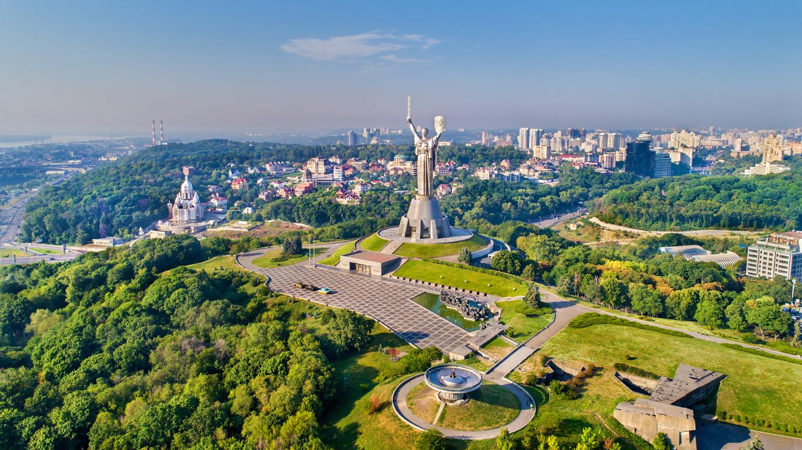

Ки́їв — столиця та найбільше місто
України, одне з найбільших і найстаріших міст Європи. Розташований у
середній течії Дніпра, у північній Наддніпрянщині. Політичний,
соціально-економічний, транспортний, освітньо-науковий, історичний,
культурний та духовний центр України. У системі
адміністративно-територіального устрою України Київ має спеціальний
статус, визначений Конституцією, і не входить до складу жодної
області, хоча і є адміністративним центром Київської області.
Місце розташування центральних органів влади України, іноземних
місій, штаб-квартир більшості підприємств і громадських об'єднань,
що працюють в Україні.
За «Повістю временних літ», Київ заснував
полянський князь Кий зі своїми братами Щеком і Хоривом та сестрою
Либіддю. Згідно з археологічними даними та писемними джерелами,
початок безперервного розвитку Києва датується 2-ю половиною V ст. —
1-ю половиною VI ст.; осередком розширення Києва була гора
Замкова. Був столицею полян, Русі, Київського князівства,
Великого князівства Руського, Української Народної Республіки,
Української Держави та Української Радянської Соціалістичної
Республіки. Також був адміністративним центром однойменного
литовсько-польського воєводства, козацького полку, російської
губернії, радянської округи, німецької генеральної округи та
радянської області.
Один із найстаріших історичних центрів Східної
Європи та християнства — Софійський собор та Києво-Печерська лавра
внесені до списку Світової спадщини ЮНЕСКО.

 
